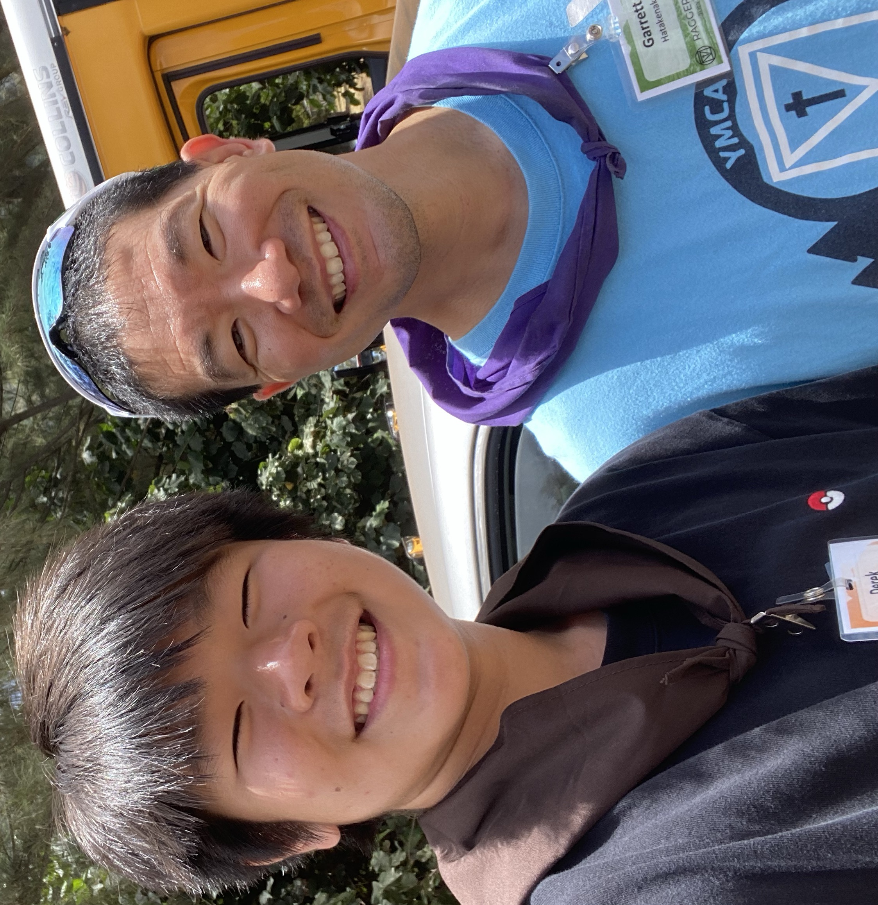

I'm the Class of 2027's Treasurer. And I ❤️ making that sweet sweet dough!!! 🤑🤑🤑 We will be having a malasada fundraiser and a Panda Express fundraiser so please support 🥺. Also since I know Mr. Kam you will be looking at this would you like to buy one? Also would you like to try one filled with haupia?
Also if you are in the Class of 2027 and looking at this, please join mascot we need smart/creative people. Here's the code! 🥺
6gk2kdb
My Opinion
I'm a Pepsi over Coke drinker anyday. With my favorite obiously being cherry which I was able to try at the Made in Hawaii Festival. What I thought was intresitng that it states that it's made in Hawaii which is an intresting place to make. Since all the materials being needed for it would be a lot higher with importation. Also if you want to know my least favorite is pepsi zero because it doesn't have the same feel to it. I also have always wanted to try the peeps pepsi and if you know please tell me 😊.

My 2 Slaves
The one to the right is my dog 😊, her name is Leah and she loves greek yogurt. If anyone was wondeing I don't eat dogs 😳. The one to my left is my private uber driver to school 😃. His name is Matthew and he abuses me so please call 911 😟. But don't actually he's my only way out of Algebra 💀💀💀.
Funny Story
Here's a picture of my favorite Pokemon, Quagsire 😊! I was actually told by a coding teacher at Kaiser that I look like him. He told me that I had the same smile, which I thought was funny since I thought that it looked like a dumb smile. Leading to me thinking that I probably have dumb smile. But thankfully I don't have braces or else it'll trully make me look like a loser 😊. Here is the picture his name is Garret.
